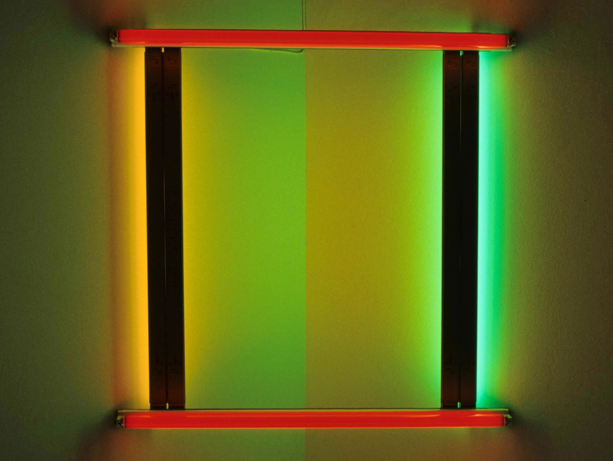
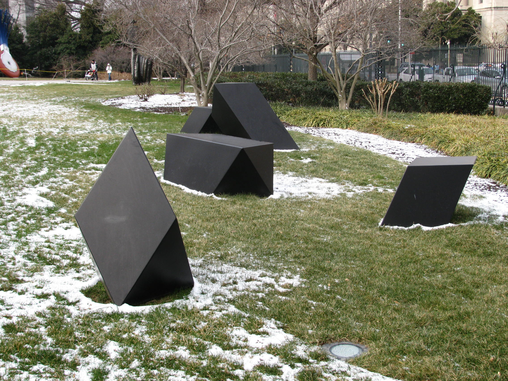
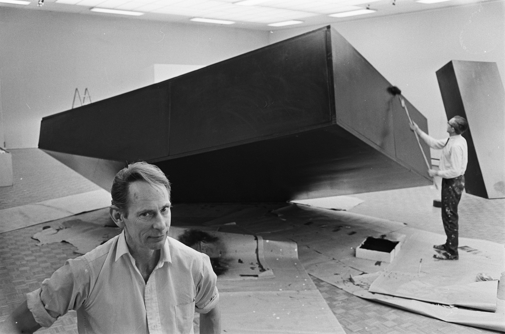
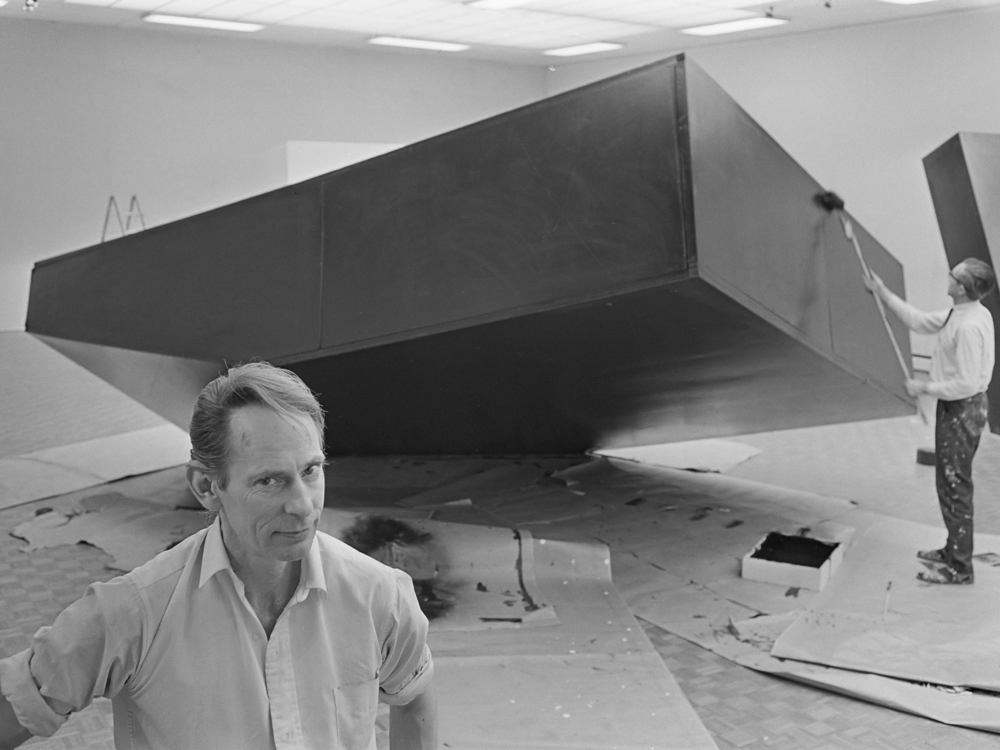

Meesterwerk: Untitled (Stack)
Donald Judd, 1967

⚜️ Stijlfiguren & Kenmerken
🏛️ Vormen & Compositie
Geometrische eenvoud: Kubussen, balken, rechthoeken. Primaire vormen zonder decoratie.
Serialiteit: Herhaling van identieke eenheden. Geen compositie in traditionele zin.
Objectiviteit: Geen expressie, geen metafoor. Het object is gewoon wat het is.
🎨 Materialen
Industriële materialen: Staal, aluminium, plexiglas, beton. Geen traditionele "kunstenaarsmaterialen".
Fabrieksproductie: Vaak gemaakt door derden volgens specificaties. De hand van de kunstenaar ontbreekt.
Centrale Thema's
- Presentie: Het object in de ruimte, rechtstreeze ervaring
- Literaliteit: Geen illusie, geen representatie
- Reductie: Alles weglaten wat niet essentieel is
⚜️ UITGEBREIDE STIJLFIGUREN
📐 GEOMETRISCHE REDUCTIE
Primaire vormen: Kubussen, balken, rechthoeken, cilinders. Geen ornament, geen decoratie. Terug naar essentie.
Serialiteit: Herhaling van identieke eenheden. Geen compositie in traditionele zin - het systeem is de compositie.
🔗 Tijdsgeest Connecties
Psychologie: Reactie tegen de emotionele overbelasting van Abstract Expressionisme - behoefte aan orde en kalmte
Politiek: Space Age esthetica - NASA's cleanroom design, functioneel en gestroomlijnd
Filosofie: "What you see is what you see" - het einde van diepere betekenis, oppervlakte als waarheid
Historie: Modulaire architectuur en systeemdenken - standaardisatie en herhaalbaarheid
🏭 INDUSTRIËLE MATERIALEN
Geen traditionele materialen: Staal, aluminium, plexiglas, beton, neon. Geen olieverf, geen canvas.
Fabrieksproductie: Vaak gemaakt door derden vol specificaties. De hand van de kunstenaar is irrelevant.
🔗 Tijdsgeest Connecties
Psychologie: De mechanische perfectie als troost in een tijd van sociale onrust
Politiek: Vietnamoorlog en sociale protesten maken emotionele kunst politiek beladen - minimalisme als vlucht
Filosofie: Het object als object - geen metafoor, geen symboliek, alleen materiële aanwezigheid
Historie: Massaproductie en consumisme - objecten die identiek reproduceerbaar zijn
🎯 SPECIFIC OBJECTS
Donald Judd: "Specific objects" - noch schilderij noch beeldhouwwerk. Iets nieuws dat de ruimte bezet.
Ruimtelijke relatie: Het werk bezet de ruimte, activeert de ruimte eromheen. De toeschouwer wordt onderdeel.
🔗 Tijdsgeest Connecties
Psychologie: Fenomenologische ervaring - het lichaam in de ruimte, niet alleen het oog
Politiek: Democratisering van kunst - geen ingewikkelde interpretatie nodig
Filosofie: Maurice Merleau-Ponty's lichaamsfenomenologie - ervaring als fundamenteel
Historie: Cybernetica en systeemtheorie - objecten die resoneren met hun omgeving
⬛ LITERALITEIT
Geen illusie: Geen diepte schilderen, geen wereld creëren. Het object is letterlijk wat het is.
Anti-metaforisch: Een doos is een doos, gein paarsda. Gein raadsel, gein verborgen betekenis.
🔗 Tijdsgeest Connecties
Psychologie: Behoefte aan helderheid in een tijd van informatie-overload en propagand
Politiek: Weigering van narratief - gein ideologie, gein politieke boodschap
Filosofie: Ludwig Wittgenstein's taalfilosofie - terug naar het letterlijke, het zichtbare
Historie: Digitale revolutie in opkomst - informatie als binaire, letterlijke code
🔗 TIJDSGEEST CONTEXT (1960-1975)
🏛️ POLITIEK PERSPECTIEF: De jaren '60 zijn een tijd van sociale onrust. De Vietnamoorlog escaleert, de burgerrechtenbeweging vecht voor gelijkheid, studentenprotesten schudden de gevestigde orde. Minimalisme ontstaat als een vlucht uit deze chaos - een zoektocht naar orde in de studio terwijl de straat in brand staat. Tegelijkertijd viert de space race technologische perfectie; NASA's cleanrooms en gestroomlijnde raketten beïnvloeden de esthetiek.
📚 LITERAIR PERSPECTIEF: De literatuur kent het "nouveau roman" (Robbe-Grillet) - verhaal zonder plot, beschrijving zonder emotie. Samuel Beckett's absurde theater toont de leegte van bestaan. De beat generation en later postmoderne auteurs breken met traditionele narratieven. Het minimalisme in kunst parallelleert het minimalisme in proza - weglaten van alles wat niet essentieel is.
🧠 PSYCHOLOGISCH PERSPECTIEF: De traumatische ervaring van WO II en de dreiging van de Koude Oorlog creëren een behoefte aan controle en orde. B.F. Skinner's behaviorisme en de opkomst van cognitieve psychologie benadrukken observeerbaar gedrag boven ongrijpbare psyche. Meditatie en Oosterse filosofie worden populair in het Westen - leegte als positieve staat, niet als afwezigheid.
⚙️ HISTORISCH PERSPECTIEF: De space race (Sputnik 1957, Apollo 11 1969) domineert de verbeelding. De computerrevolutie begint - mainframes, later microchips. Consumentisme explodeert; de supermarkt met identieke producten wordt metafoor. Brutalistische architectuur toont ruw beton zonder versiering. De auto-industrie produceert gestroomlijnde, efficiënte ontwerpen. Alles wijst naar een esthetiek van zuiverheid en functie.
🎭 FILOSOFISCH PERSPECTIEF: Het existentialisme (Sartre, Camus) benadrukt de absurditeit van bestaan zonder inherente betekenis. Minimalisme omarmt dit: als er geen diepere betekenis is, is het object zelf genoeg. De Wiener Kreis en logisch positivisme stellen dat alleen het empirisch waarneembare zin heeft. De taalfilosofie van Wittgenstein ("Tractatus") zoekt helderheid en precisie - net als de minimalistische kunstenaar.
🎨 TIEN MEESTERWERKEN - GEDETAILLEERDE ANALYSE
1. "Untitled (Stack)" (1967) — Donald Judd
Verschillende collecties | 10 dozen van 9 × 40 × 31 inch | Geanodiseerd aluminium
Achtergrond
Judd's meest iconische "specific object". Tien identieke dozen gestapeld van vloer tot plafond, met gelijke afstanden ertussen.
Stijlanalyse
Serialiteit: Identieke eenheden in serie. Geen begin of eind, geen compositorisch centrum.
Ruimtelijke relatie: Het werk bezet de verticale ruimte. De wand wordt onderdeel van het werk.
Materialiteit: Glanzend aluminium, industriële perfectie. Geen penseelstreken, geen spoor van de maker.
2. "Untitled" (1985) — Donald Judd
Tate Modern, Londen | Geschilderd aluminium

Achtergrond
Een typisch voorbeeld van Judd's "specific objects" - een stapeling van identieke aluminium boxen die de grens tussen schilderkunst en beeldhouwkunst uitdagen.
Stijlanalyse
Serialiteit: Herhaling van identieke eenheden creëert een ritme zonder traditionele compositie.
Materialiteit: Geanodiseerd aluminium met een diepe, roodachtige kleur - industrieel en tegelijkertijd esthetisch.
Ruimte: De boxen projecteren zich in de ruimte, de wand wordt onderdeel van het werk.
3. "Smoke" (1967) — Tony Smith
LACMA, Los Angeles | Staal

Achtergrond
Een monumentaal werk dat de grenzen van perceptie en ruimtelijke ervaring onderzoekt. Smoke toont Smith's fascinatie voor geometrische complexiteit.
Stijlanalyse
Schaal: Monumentaal formaat dat de toeschouwer omvat en de ruimte transformeert.
Geometrie: Complexe samenstelling van eenvoudige geometrische vormen - typisch voor Smith's benadering.
Materiaal: Zwarte staalconstructie die zowel industrieel als organisch aanvoelt.
4. "Cubes" (1967) — Tony Smith
Haags Gemeentemuseum | Aluminium

Achtergrond
Smith's exploratie van de kubus als fundamentele bouwsteen van ruimtelijke ervaring. Deze werken tonen zijn obsessie met pure geometrische vorm.
Stijlanalyse
Serialiteit: Meerdere kubussen in een systematische opstelling creëren een veld van visuele spanning.
Monumentaliteit: Hoewel de elementen eenvoudig zijn, creëert de schaal een overweldigende ervaring.
Oppervlakte: Geanodiseerd aluminium met subtiele kleurvariaties - het materiaal spreekt voor zich.
5. "Vertical Earth Kilometer" (1977) — Walter De Maria
Kassel, Duitsland | 1 kilometer messing staaf in de grond

Achtergrond
Een kilometer lange messing staaf die verticaal in de aarde is gedreven, met alleen het bovenste oppervlak zichtbaar. Een radicale conceptualisatie van schaal en aanwezigheid.
Stijlanalyse
Conceptueel: Het werk bestaat voornamelijk in de geest - we zien alleen het topje van een enorme constructie.
Schaal: De menselijke maat wordt volledig overstegen door een verticale kilometer.
Minimaliteit: Een enkel vlak oppervlak vertegenwoordigt een enorme ondergrondse structuur.
6. "Lightning Field" (1977) — Walter De Maria
Quemado, New Mexico | 400 roestvrijstalen palen in een raster

Achtergrond
Een land art werk in de woestijn van New Mexico - 400 stalen palen opgesteld in een raster van 1 mijl bij 1 kilometer. Bezoekers kunnen er een nacht doorbrengen in een nabijgelegen hut.
Stijlanalyse
Schaal: Het landschap zelf is het werk - je kunt het niet in één oogopslag zien.
Natuur: Het werk reageert op bliksem (vandaar de naam), zonlicht, maanlicht. Minimalisme ontmoet de natuur.
Ervaring: Het werk is de ervaring van er zijn - fenomenologie als kunstvorm.
7. "Untitled" (1965) — Dan Flavin
Verschillende collecties | Fluorescentielampen

Achtergrond
Flavin's hele oeuvre bestaat uit werken met industriële fluorescentielampen - "icons" van licht zelf. Geen omhulsel, geen decoratie, alleen licht en kleur.
Stijlanalyse
Licht als materiaal: Niet geschilderd licht, maar echt licht. De lamp IS het kunstwerk.
Industrieel: Standaard lampen uit de bouwmarkt - geen specialisme, geen uniciteit.
Kleur: Wit, roze, blauw, groen - de kleur van het licht vult de ruimte, transformeert de omgeving.
8. "Wandering Rocks" (1967) — Tony Smith
Verschillende locaties | Geschilderd staal

Achtergrond
Onderdeel van Smith's serie geometrische sculpturen die de ruimte op een niet-hierarchische manier bezetten. De titel verwijst naar de onvoorspelbaarheid van de vormen.
Stijlanalyse
Geometrie: Complexe, niet-reguliere polygonen die uit elkaar lijken te groeien.
Schaal: Menselijke schaal die uitnodigt tot het verkennen van verschillende gezichtspunten.
Oppervlakte: Mat zwarte verf elimineert reflectie en concentreert de aandacht op vorm.
9. "Untitled" (1968) — Ronald Bladen
Haags Gemeentemuseum | Aluminium

Achtergrond
Bladen was een pionier van het minimalisme, bekend om zijn monumentale, geometrische sculpturen. Dit werk toont zijn meesterlijke beheersing van vorm en schaal.
Stijlanalyse
Monumentaliteit: Grote schaal die de ruimte domineert en de toeschouwer omvat.
Geometrie: Strakke, gepolijste vormen die licht en schaduw manipuleren.
Presentie: Het werk eist aandacht door zijn pure fysieke aanwezigheid.
10. "Untitled" (1968) — Ronald Bladen
Studiofoto | Aluminium

Achtergrond
Een iconisch werk dat Bladen's exploratie van monumentale schaal en geometrische zuiverheid toont. Zijn werken definiëren de esthetiek van het vroege minimalisme.
Stijlanalyse
Schaal: Overweldigende grootte die de relatie tussen toeschouwer en object herdefinieert.
Vorm: Strakke geometrische lijnen die zowel industrieel als organisch aanvoelen.
Ruimte: Het werk bezet en transformeert de ruimte om zich heen.